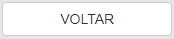
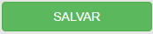
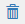
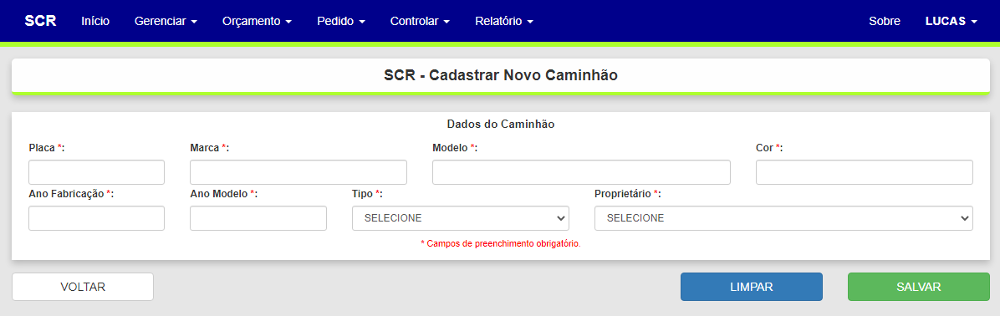
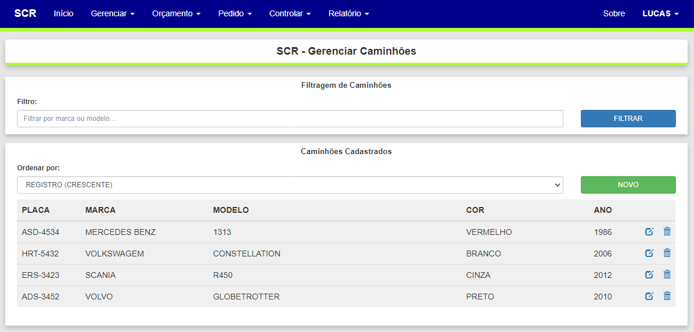

RegrasBasicas
Regras básicas de interação em cadastros
Recebe link de cada tela básica de Cadastro
Padrões e Ícones:
Botão |
Nome |
Descrição |
Filtrar |
Executa a filtragem dos registros atualmente cadastrados de acordo com os campos de filtro informados. |
|
Novo |
Abre a página de cadastro de um novo registro com os campos para preenchimento e opções de salvar, limpar e voltar. |
|
 |
Voltar |
Limpa todos os campos e validações e volta para a página principal de filtragem e gerenciamento. |
Limpar |
Limpa todos os campos de preenchimento e suas validações. |
|
 |
Salvar |
Executa a validação geral dos campos de preenchimento obrigatório e faz o envio dos dados preenchidos para processamento e registro no banco de dados. |
Adicionar |
Adiciona o vínculo de um registro ao outro como um item ou critério particular. |
|
Adicionar Vincular |
Possui contextualizações diferentes. Na página de cadastro representações, representa a adição de uma nova unidade com os mesmos dados. Na página de cadastro de produtos, representa a adição de vínculos com tipos de caminhão adequados ao produto para carregamento. |
|
Editar |
Valida os vínculos ativos e abre uma pagina com campos para alteração de dados do registro correspondente na tabela. |
|
 |
Excluir |
Mostra um diálogo confirmando a exclusão do registro correspondente na tabela. |
Formas de interação:
Como Incluir um Cadastro
Ao selecionar alguma função de cadastro é apresentada uma página semelhante à seguir...
Ao clicar no botão NOVO é apresentada uma página semelhante à seguir...

Como Alterar um Cadastro
Para alterar um cadastro, basta encontrá-lo na tabela e clicar no ícone alterar. Alguns dados não podem ser alterados, pois influenciam na regra de negócio ou em outros registros. Para identificar os campos que não podem ser alterados, basta observar que ao passar com o mouse por cima ou tentar inserir dados, o campo apresenta não estar liberado para digitação.
Como Excluir um Cadastro
Para excluir um cadastro, assim como para alterar, basta encontrá-lo na tabela e clicar no ícone excluir. aparecerá um diálogo confirmando a exclusão do registro correspondente. A eliminação é possível sempre que o cadastro não tenha qualquer relacionamento ativo no processo, isto é, que não exista ligação desses registros com outros registros por chave estrangeira.
Como Pesquisar um Cadastro
Ao acessar a página principal de cadastro de algum registro, é apresentada uma janela semelhante à seguir. Nessa janela é possível informar filtros e um parâmetro de ordenação para a seleção dos registros para a pesquisa.

Na tela de pesquisa exemplificada acima é necessário definir as seguintes informações:
Campo |
Descrição |
Filtro |
Inserir um texto referencie o que está procurando. Exemplo: "silva" -> Antônio da Silva. |
Ordenar por |
Selecionar uma coluna da tabela pela qual ordenar os registros. |
Created with the Personal Edition of HelpNDoc: Create HTML Help, DOC, PDF and print manuals from 1 single source